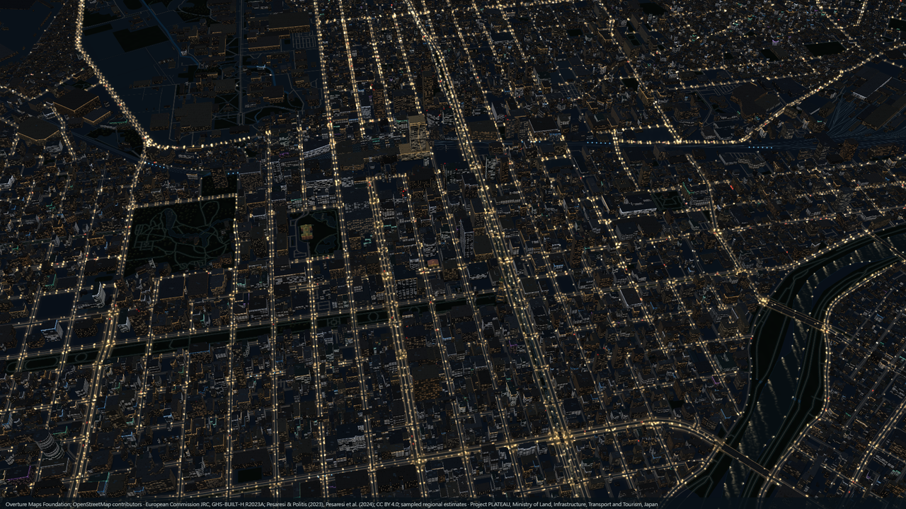
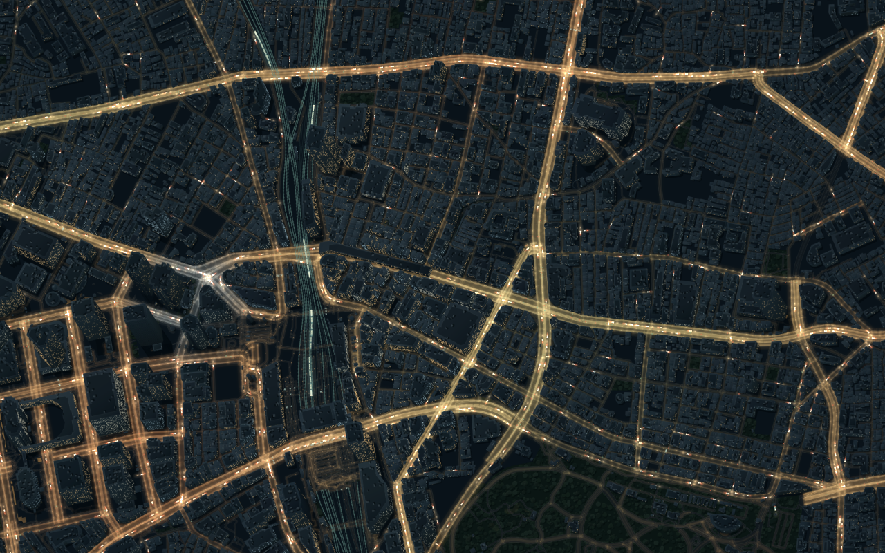
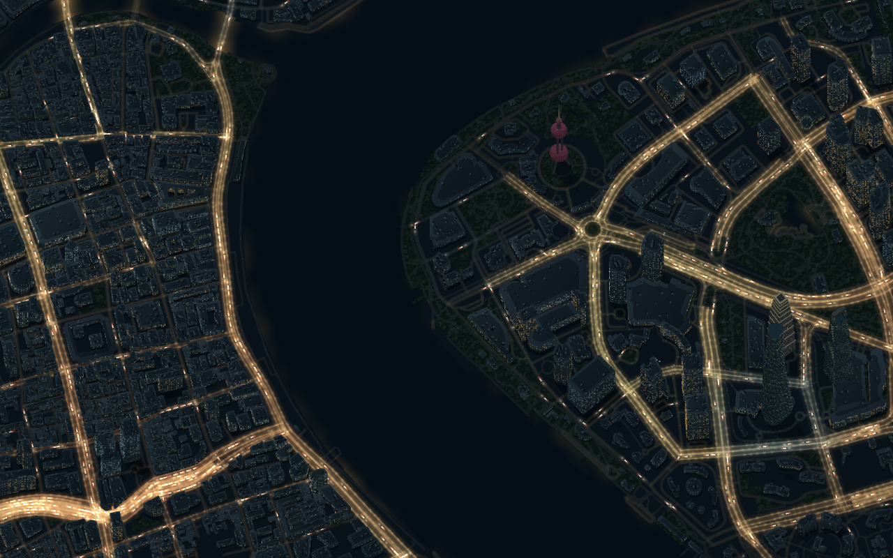
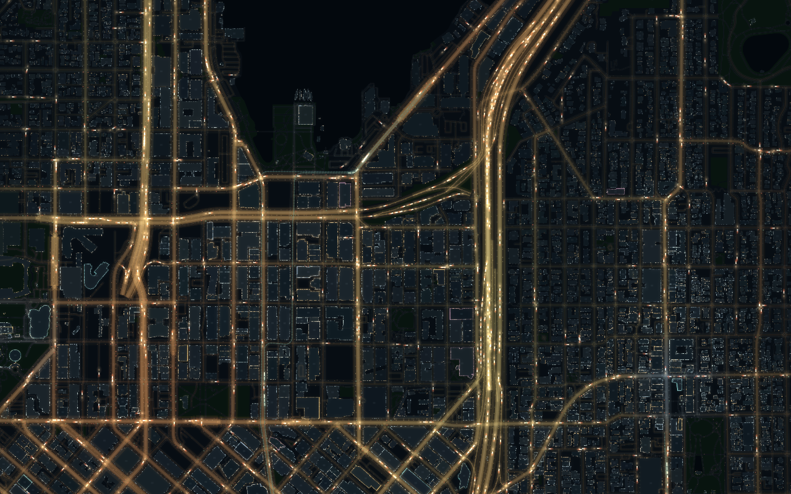
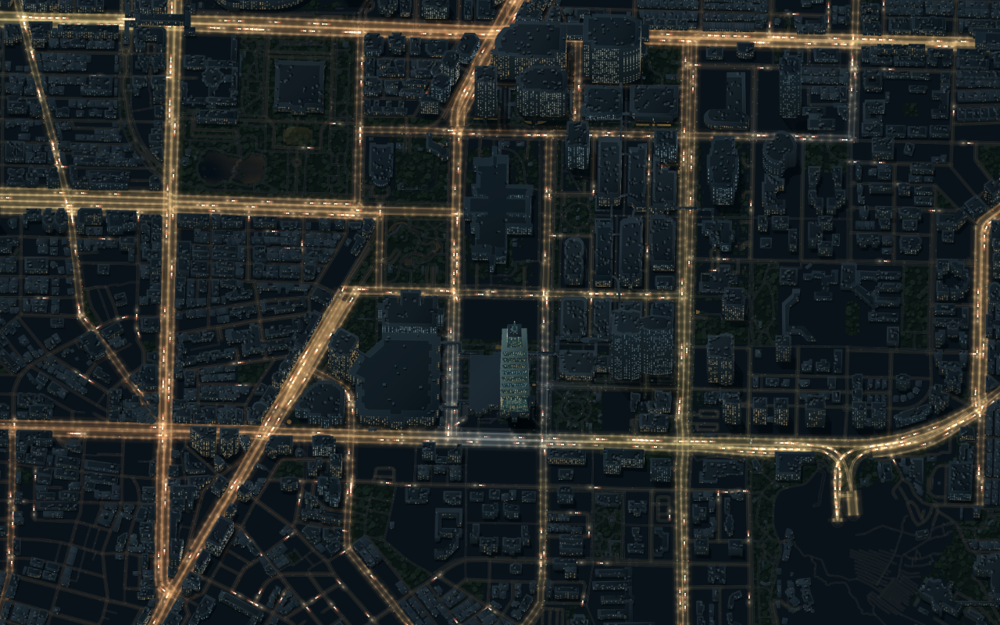

Streets after dark
入夜之後的街道
Five places, drawn from real street geometry with the same lighting rules. These are archived v0.2.0 Canvas exports. Choose a city to explore it in the current 3D editor.
五個地點，以相同照明規則描繪真實街道。以下皆為 v0.2.0 Canvas 版本的歷史匯出。選擇城市，即可在目前的 3D 編輯器探索。

A warm grid around a quiet park.金色棋盤街道，環繞靜謐公園。

Dense blocks and railways around the station.車站周圍密集的街廓與鐵道。

Bright streets against the dark river.明亮街道與幽暗河面的對比。

Angled avenues at the water's edge.水岸旁交錯傾斜的大道。

A familiar silhouette above the golden streets.金色街道上，熟悉的分節塔身。
Watch the city move
看城市流動
A 12-second excerpt from an actual Sapporo video export. Silent, simulated traffic; press Play to watch. Download the recording.
札幌實際影片匯出的 12 秒片段。無聲、模擬車流，按播放即可觀看。下載短片。